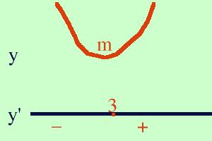

| y = x2 - 6x + 4 Calcolo la derivata prima della funzione y' = 2x - 6 Pongo la derivata uguale a zero per cercare eventuali punti estremanti 2x - 6 = 0 2x = 6 x = 3 Calcolo il valore della funzione di partenza nel punto 3 f(3) = 32 -6·3 + 4 = -5 il punto A( 3, -5) e' un punto estremante, devo vedere se e' un massimo, un minimo o un flesso Studio il segno della derivata prima 2x - 6 > 0 2x > 6 x > 3 cioe' per valori maggiori di 3 la derivata e' positiva  Faccio un grafico (costruisco la figura dal basso verso l'alto) tracciando per y' l'orizzontale e segnando il punto x=3; prima del punto la derivata e' negativa e scrivo -, dopo il punto e' positiva e metto +. Dove y' e' negativa traccio per la y una curva verso il basso mentre dove y' e' positiva traccio per la y una curva verso l'alto ricordando che dove la derivata e' nulla la curva deve essere orizzontale. Queste curve mi simulano l'andamento della funzione. Cio' che ottengo e' un punto di minimo, quindi A( 3, -5) e' un punto di minimo per la funzione data e lo indico con m( 3, -5) |